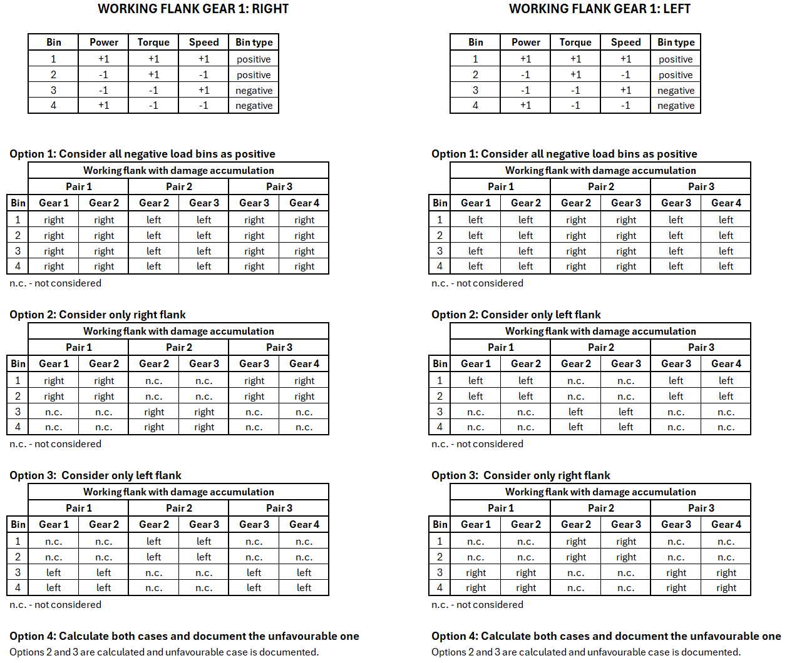

|
|
|


载荷谱含负值分量
带有负载荷区间（T < 0 和/或 n < 0）的载荷谱可以如下计算。
重要提示：
- 如果非工作齿面承受载荷，则该载荷区间被视为负区间。
- 这不适用于惰轮的点蚀安全系数计算（在行星齿轮级的情况下，它仅适用于太阳轮和内齿轮；在行星轮的情况下，假设两个齿面始终承受载荷）。
- 在计算齿根安全系数时，这仅适用于交变弯曲系数为 YM=1.0 的区间。

图 15.10：载荷谱区间的评估
在 中，可以在 选项卡下选择和定义以下选项：
- 用于计算点蚀安全：
- 将所有负载荷区间按正区间评估（与之前相同）
- 仅考虑右齿面
- 仅考虑左齿面
- 计算两种情况，并记录较不利的情况
- 用于计算齿根安全：
- 将所有负载荷区间按正区间评估（与之前相同）
- 将负载荷区间的齿根应力增大 1/0.7
- 将正载荷区间的齿根应力增大 1/0.7
- 计算两种情况，并记录更符合实际的情况
English Original
Load spectra with negative bins
Load spectra with negative load bins (T < 0 and/or n < 0) can be calculated as follows.
IMPORTANT:
- A load bin is considered to be negative if the non-working flank is placed under load.
- This does not apply for the calculation of the pitting safety for idler gears (in the case of planetary gear stages, it only applies to the sun and internal gear; in the case of planets, it is assumed that both flanks are always under load).
- When calculating the root safety, this is only applied to bins where the alternating bending factor is YM=1.0.
Figure 15.10: Evaluation of load spectra bins
Under in the tab the following options can be selected and defined:
- For calculating pitting safety
- Evaluate all negative load bins as positive (as up to now)
- Consider only right flank
- Consider only left flank
- Calculate both cases and document the less favorable case
- For calculating root safety
- Evaluate all negative load bins as positive (as up to now)
- Increase tooth root stress for negative load bins by 1/0.7
- Increase tooth root stress for positive load bins by 1/0.7
- Calculate both cases and document the more realistic case